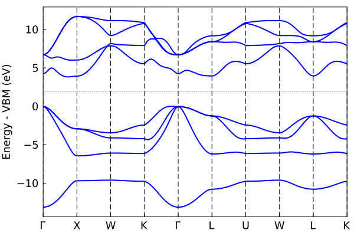
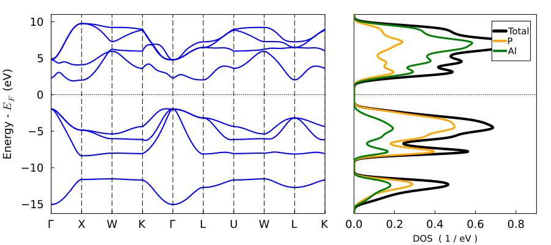
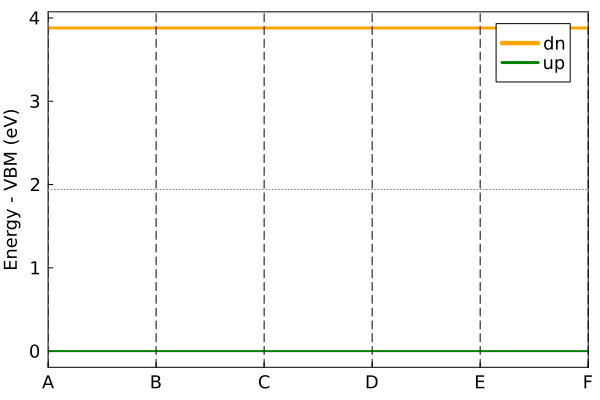

Running tight-binding calculations
How to run tight-binding calculations using the pre-fit tight-binding coefficients. Note, only elemental and binary systems are currently supported.
Running a julia function for the first time will compile the function. Future runs will be much faster.
Create a crystal object
Use makecrys to create a crystal from lattice vectors, atomic positions, and atom types:
using ThreeBodyTB
A = [2.1 2.1 0.0;2.1 0.0 2.1;0.0 2.1 2.1];
pos = [0.0 0.0 0.0];
types = ["Al"];
fcc_al = makecrys(A, pos, types)Units: Å
A1= 2.10000 2.10000 0.00000
A2= 2.10000 0.00000 2.10000
A3= 0.00000 2.10000 2.10000
Al 0.00000 0.00000 0.00000
Current default units are Angstrom and eV. You can change the global units to atomic units with set_units(both="atomic") if you prefer.
Alternatively, you can read the positions from a simple POSCAR or Quantum Espresso input file.
rbcl = makecrys("../src/POSCAR_rbcl")Units: Å
A1= 3.90963 0.00000 0.00000
A2= 0.00000 3.90963 0.00000
A3= 0.00000 0.00000 3.90963
Rb 0.00000 0.00000 0.00000
Cl 0.50000 0.50000 0.50000
Do a self-consistent calculation.
Gets the energy and charge density with scf_energy:
alp = makecrys("../src/POSCAR_alp")
energy, tbc_alp = scf_energy(alp);
println("The energy is $energy eV")
START SCF ----------------
SCF CALC 0001 energy -10.55408488
SCF CALC 0002 energy -10.52616388 en_diff: 2.792100E-02 dq_diff: 8.846071E-01 mix: 4.000000E-01
SCF CALC 0003 energy -10.50207018 en_diff: 2.409371E-02 dq_diff: 4.993416E-01 mix: 4.000000E-01
SCF CALC 0004 energy -10.48518376 en_diff: 1.688642E-02 dq_diff: 2.818125E-01 mix: 4.000000E-01
SCF CALC 0005 energy -10.47460640 en_diff: 1.057736E-02 dq_diff: 1.590286E-01 mix: 4.000000E-01
SCF CALC 0006 energy -10.46830396 en_diff: 6.302438E-03 dq_diff: 8.973524E-02 mix: 4.800000E-01
SCF CALC 0007 energy -10.46389975 en_diff: 4.404211E-03 dq_diff: 4.281269E-02 mix: 4.800000E-01
SCF CALC 0008 energy -10.46175961 en_diff: 2.140138E-03 dq_diff: 2.042529E-02 mix: 4.800000E-01
SCF CALC 0009 energy -10.46072973 en_diff: 1.029880E-03 dq_diff: 9.744450E-03 mix: 4.800000E-01
SCF CALC 0010 energy -10.46023639 en_diff: 4.933475E-04 dq_diff: 4.648826E-03 mix: 4.800000E-01
YES convergence in 10 iters, energy -10.460236385746784 eV
END SCF ------------------
ΔQ = [-0.89, 0.89]
scf_energy success, done
Formation energy: -0.494 eV/atom
The energy is -10.460236385746784 eVThis returns the (non-magnetic) atomization energy, and a tight-binding object with the TB matrix elements and SCF electron density calculated for post-processing.
Plot the band structure.
Using the tb_crys tight-binding object tbc_alp from above. Note: SCF must be done first.
plot_bandstr(tbc_alp, do_display=false);"/home/kfg/codes/NIST/ThreeBodyTB.jl/docs/build/alp.png"
Use do_display=true (the default) to produce an interactive plot. Here do_display is set to false because we are saving a static figure with savefig for the docs.
The default plot_bandstr just picks some random kpoints, but you can add your own kpath. We can also project onto the s orbital of Al.
kpath=[0.0 0.0 0.0; 0.5 0.5 0.5; 0.0 0.5 0.5];
knames=["Γ", "X", "V"];
plot_bandstr(tbc_alp, kpath=kpath, names=knames, npts=100, proj_orbs=[:s], proj_types=["Al"], do_display=false);"/home/kfg/codes/NIST/ThreeBodyTB.jl/docs/build/alp2.png"
You can also plot the DOS using dos
dos(tbc_alp, do_display=false);"/home/kfg/codes/NIST/ThreeBodyTB.jl/docs/build/alp_dos.png"
Project onto orbitals instead with proj_type=:orbs
Symmetry-enabled plotting
Plot bandstructure path with symmetry plot_bandstr_sym:
plot_bandstr_sym(tbc_alp, do_display=false);"/home/kfg/codes/NIST/ThreeBodyTB.jl/docs/build/alp3.png"
Plot bandstructure with DOS plot_bandstr_dos:
plot_bandstr_dos(tbc_alp, do_display=false);"/home/kfg/codes/NIST/ThreeBodyTB.jl/docs/build/alp4.png"
Calculate force / stress
energy, force, stress, tbc = scf_energy_force_stress(tbc_alp);
println("energy $energy")
println()
println("Forces")
show(stdout, "text/plain", force)
println()
println("Stress")
show(stdout, "text/plain", stress)
Calculate Force, Stress (no scf)
START SCF ----------------
SCF CALC 0001 energy -10.46000056
SCF CALC 0002 energy -10.45988326 en_diff: 1.173021E-04 dq_diff: 1.009740E-03 mix: 4.000000E-01
SCF CALC 0003 energy -10.45984052 en_diff: 4.274270E-05 dq_diff: 5.697215E-04 mix: 4.000000E-01
SCF CALC 0004 energy -10.45981640 en_diff: 2.412084E-05 dq_diff: 3.214517E-04 mix: 4.000000E-01
YES convergence in 4 iters, energy -10.459816398138578 eV
END SCF ------------------
ΔQ = [-0.89, 0.89]
Prepare to calculate Jacobian of TB object
Calculate Force / Stress
...doing stress ...doing atom 1 2.
done
----
Formation energy: -0.494 eV/atom
Lattice Vectors | Stress
-----------------------------------------------------------------------
A1= +0.00000 +2.60000 +2.60000 | +8.75790 +0.00000 +0.00000
A2= +2.60000 +0.00000 +2.60000 | +0.00000 +8.75790 +0.00000
A3= +2.60000 +2.60000 +0.00000 | +0.00000 +0.00000 +8.75790
Crystal coords | Force (Cartesian)
-----------------------------------------------------------------------
Al +0.00000 +0.00000 +0.00000 | +0.00000 +0.00000 +0.00000
P +0.25000 +0.25000 +0.25000 | +0.00000 +0.00000 +0.00000
-----------------------------------------------------------------------
energy -10.459816398138578
Forces
2×3 Matrix{Float64}:
0.0 0.0 0.0
0.0 0.0 0.0
Stress
3×3 Matrix{Float64}:
0.0953855 0.0 0.0
0.0 0.0953855 0.0
0.0 0.0 0.0953855Can also be called directly on a new crystal structure instead of a tb_crys object.
Relax structure
Using relax_structure
crys_new, tbc_updated, energy, force, stress = relax_structure(alp);
println("Energy new $energy")
println()
println("Force")
show(stdout, "text/plain", force)
println()
println("Stress")
show(stdout, "text/plain", stress)Units are now eV and Å
Units are now Ryd. and Bohr
START SCF ----------------
SCF CALC 0001 energy -0.77571065
SCF CALC 0002 energy -0.77365849 en_diff: 2.052155E-03 dq_diff: 8.846071E-01 mix: 4.000000E-01
SCF CALC 0003 energy -0.77188764 en_diff: 1.770854E-03 dq_diff: 4.993416E-01 mix: 4.000000E-01
SCF CALC 0004 energy -0.77064651 en_diff: 1.241129E-03 dq_diff: 2.818125E-01 mix: 4.000000E-01
SCF CALC 0005 energy -0.76986909 en_diff: 7.774210E-04 dq_diff: 1.590286E-01 mix: 4.000000E-01
SCF CALC 0006 energy -0.76940587 en_diff: 4.632204E-04 dq_diff: 8.973524E-02 mix: 4.800000E-01
SCF CALC 0007 energy -0.76908217 en_diff: 3.237034E-04 dq_diff: 4.281269E-02 mix: 4.800000E-01
SCF CALC 0008 energy -0.76892487 en_diff: 1.572972E-04 dq_diff: 2.042529E-02 mix: 4.800000E-01
SCF CALC 0009 energy -0.76884918 en_diff: 7.569475E-05 dq_diff: 9.744450E-03 mix: 4.800000E-01
SCF CALC 0010 energy -0.76881291 en_diff: 3.626036E-05 dq_diff: 4.648826E-03 mix: 4.800000E-01
SCF CALC 0011 energy -0.76879558 en_diff: 1.733259E-05 dq_diff: 2.217828E-03 mix: 4.800000E-01
SCF CALC 0012 energy -0.76878731 en_diff: 8.276576E-06 dq_diff: 1.058063E-03 mix: 5.760000E-01
SCF CALC 0013 energy -0.76878257 en_diff: 4.740456E-06 dq_diff: 3.941134E-04 mix: 5.760000E-01
SCF CALC 0014 energy -0.76878080 en_diff: 1.766167E-06 dq_diff: 1.468015E-04 mix: 5.760000E-01
SCF CALC 0015 energy -0.76878014 en_diff: 6.579292E-07 dq_diff: 5.468142E-05 mix: 5.760000E-01
SCF CALC 0016 energy -0.76877990 en_diff: 2.450770E-07 dq_diff: 2.036803E-05 mix: 5.760000E-01
SCF CALC 0017 energy -0.76877980 en_diff: 9.128870E-08 dq_diff: 7.586791E-06 mix: 5.760000E-01
YES convergence in 17 iters, energy -0.7687798045552228 Ryd.
END SCF ------------------
ΔQ = [-0.89, 0.89]
starting vec
[0.0, 0.0, 0.0, 0.25, 0.25, 0.25, 0.0, 0.0, 0.0, 0.0, 0.0, 0.0]
Conj Grad START
START SCF ----------------
SCF CALC 0001 energy -0.76877977
SCF CALC 0002 energy -0.76877976 en_diff: 1.099476E-08 dq_diff: 1.286614E-06 mix: 4.000000E-01
YES convergence in 2 iters, energy -0.7687797595566086 Ryd.
END SCF ------------------
ΔQ = [-0.89, 0.89]
Prepare to calculate Jacobian of TB object
Calculate Force / Stress
...doing stress ...doing atom 1 2.
FCALL 1 en: -0.7687797595566086 (Ryd) fsum: 0.0 ssum: 0.00179938181415565 xxxxxxxxxxxxxxxxxxxxxxxxxxxxxxx
Lattice Vectors | Stress
-----------------------------------------------------------------------
A1= +0.00000 +4.91329 +4.91329 | +0.00104 +0.00000 +0.00000
A2= +4.91329 +0.00000 +4.91329 | +0.00000 +0.00104 +0.00000
A3= +4.91329 +4.91329 +0.00000 | +0.00000 +0.00000 +0.00104
Crystal coords | Force (Cartesian)
-----------------------------------------------------------------------
Al +0.00000 +0.00000 +0.00000 | +0.00000 +0.00000 +0.00000
P +0.25000 +0.25000 +0.25000 | +0.00000 +0.00000 +0.00000
-----------------------------------------------------------------------
START SCF ----------------
SCF CALC 0001 energy -0.78843427
SCF CALC 0002 energy -0.78843437 en_diff: 1.008046E-07 dq_diff: 8.163035E-06 mix: 4.000000E-01
YES convergence in 2 iters, energy -0.7884343681076027 Ryd.
END SCF ------------------
ΔQ = [-0.84, 0.84]
Prepare to calculate Jacobian of TB object
Calculate Force / Stress
...doing stress ...doing atom 1 2.
FCALL 2 en: -0.7884343681076027 (Ryd) fsum: 0.0 ssum: 0.00019702979839959596 xxxxxxxxxxxxxxxxxxxxxxxxxxxxxxx
Lattice Vectors | Stress
-----------------------------------------------------------------------
A1= +0.00000 +5.15546 +5.15546 | +0.00011 +0.00000 +0.00000
A2= +5.15546 +0.00000 +5.15546 | +0.00000 +0.00011 +0.00000
A3= +5.15546 +5.15546 +0.00000 | +0.00000 +0.00000 +0.00011
Crystal coords | Force (Cartesian)
-----------------------------------------------------------------------
Al +0.00000 +0.00000 +0.00000 | +0.00000 +0.00000 +0.00000
P +0.25000 +0.25000 +0.25000 | +0.00000 +0.00000 +0.00000
-----------------------------------------------------------------------
MY CG quadratic linesearch iter 1 fn val: -0.7884343681076027 | rms grad: 0.05399617578010686 within_stepsize: true , old step: 0.30000000000000004 , new step_size: 0.3355015892978477
START SCF ----------------
SCF CALC 0001 energy -0.78877560
SCF CALC 0002 energy -0.78875870 en_diff: 1.690623E-05 dq_diff: 1.299396E-03 mix: 4.000000E-01
SCF CALC 0003 energy -0.78875284 en_diff: 5.855415E-06 dq_diff: 7.096452E-04 mix: 4.000000E-01
SCF CALC 0004 energy -0.78874964 en_diff: 3.198620E-06 dq_diff: 3.875616E-04 mix: 4.000000E-01
SCF CALC 0005 energy -0.78874789 en_diff: 1.747107E-06 dq_diff: 2.116606E-04 mix: 4.000000E-01
YES convergence in 5 iters, energy -0.7887478943269833 Ryd.
END SCF ------------------
ΔQ = [-0.83, 0.83]
Prepare to calculate Jacobian of TB object
Calculate Force / Stress
...doing stress ...doing atom 1 2.
FCALL 3 en: -0.7887478943269833 (Ryd) fsum: 0.0 ssum: 1.76322206334105e-8 xxxxxxxxxxxxxxxxxxxxxxxxxxxxxxx
Lattice Vectors | Stress
-----------------------------------------------------------------------
A1= +0.00000 +5.18971 +5.18971 | +0.00000 +0.00000 +0.00000
A2= +5.18971 +0.00000 +5.18971 | +0.00000 +0.00000 +0.00000
A3= +5.18971 +5.18971 +0.00000 | +0.00000 +0.00000 +0.00000
Crystal coords | Force (Cartesian)
-----------------------------------------------------------------------
Al +0.00000 +0.00000 +0.00000 | +0.00000 +0.00000 +0.00000
P +0.25000 +0.25000 +0.25000 | +0.00000 +0.00000 +0.00000
-----------------------------------------------------------------------
Units are now eV and Å
Relax done
energy -0.7887478943269833
force [0.0 0.0 0.0; 0.0 0.0 0.0]
stress [1.0179967329118981e-8 0.0 0.0; 0.0 1.0179967329099018e-8 0.0; 0.0 0.0 1.0179967329113277e-8]
Formation energy: -0.63 eV/atom
---------------------------------
Final Energy -0.7887478943269833
Lattice Vectors | Stress
-----------------------------------------------------------------------
A1= +0.00000 +2.74628 +2.74628 | +0.00000 +0.00000 +0.00000
A2= +2.74628 +0.00000 +2.74628 | +0.00000 +0.00000 +0.00000
A3= +2.74628 +2.74628 +0.00000 | +0.00000 +0.00000 +0.00000
Crystal coords | Force (Cartesian)
-----------------------------------------------------------------------
Al +0.00000 +0.00000 +0.00000 | +0.00000 +0.00000 +0.00000
P +0.25000 +0.25000 +0.25000 | +0.00000 +0.00000 +0.00000
-----------------------------------------------------------------------
Energy new -10.731465700327336
Force
2×3 Matrix{Float64}:
0.0 0.0 0.0
0.0 0.0 0.0
Stress
3×3 Matrix{Float64}:
9.34682e-7 0.0 0.0
0.0 9.34682e-7 0.0
0.0 0.0 9.34682e-7Energy is lower, stress is near zero, forces are zero by symmetry in Zinc Blende structure.
Force/Stress defaults are eV/Ang and eV/Ang^3.
Magnetic calculations
Set nspin=2, default is ferromagnetic.
c_hatom = makecrys([10.0 0 0; 0 10.0 0; 0 0 10.0], [0 0 0], [:H])
en, tbc, flag = scf_energy(c_hatom, nspin=2)
plot_bandstr(tbc, do_display=false)"/home/kfg/codes/NIST/ThreeBodyTB.jl/docs/build/h_bands.png"
Sparse matrix
Code will automatically try sparse matrix routines for large cells. You can set sparse=true in scf_energy and several other functions to force the use of sparse matricies, but users shouldn't have to worry about which backend is being used.